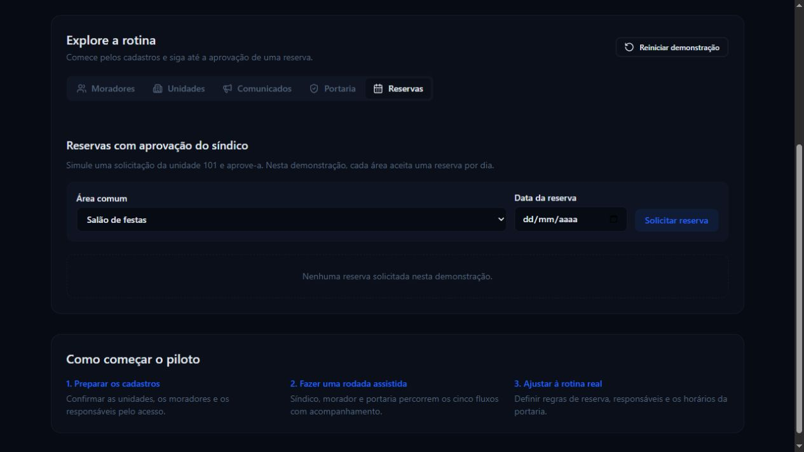

PROJETO PRINCIPAL · SaaS / PWA
CondoSphere
Da rotina do condomínio
às regras de cada perfil.
Plataforma de gestão condominial com unidades, moradores, portaria, reservas e comunicados. O desenvolvimento conecta interface, serviços, permissões e isolamento dos dados por condomínio.
Projeto em preparação para piloto, com integração financeira em sandbox. O botão abre a demonstração pública do próprio CondoSphere, com dados fictícios.

A interface do próprio CondoSphere.
Moradores, unidades, comunicados, portaria e reservas na demonstração publicada do projeto.